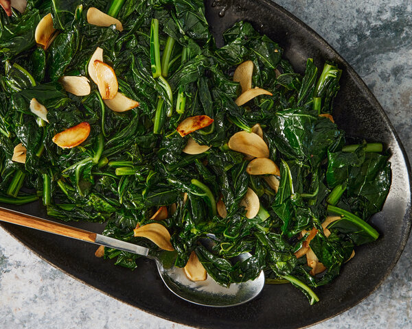

Beet Greens

Boiled greens
You can substitute any fresh greens.
Ingredients
- 1 lb beet greens, well washed
- 3 cloves garlic
- 1 tablespoon butter
- 2 tablespoons olive oil
- 1/2 chicken bouillon cube or 1/2 tsp. low sodium soup base
- 1/4 cup water
Steps
- In a large saucepan, bring 1/4 cup water to a rolling boil. Drop in washed beet greens. Peel garlic cloves and slice or shave thinly (a vegetable peeler or garlic mandoline may be used) or, alternatively, finely mince the garlic. Add to water along with the greens.
- Reduce heat and cook for only 5 minutes after greens have wilted (for young greens - older greens will require a few additional minutes to tenderize. Taste them and see if they are done).
- Combine bouillon cube or low sodium soup base with olive oil. When butter has melted, stir in olive oil.
- Drain greens; season to taste with sea salt and pepper.
Back to Home